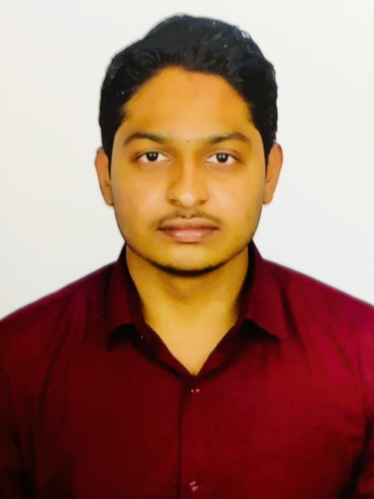

San Jose, California | rahhulj.prof@gmail.com | LinkedIn | Software Development Engineer
San Jose State University, San Jose, CA
Master of Science in Engineering Specialization in Computer Science and Computer Engineering (August 2024 - May 2026)
Indian Institute of Technology Hyderabad, Hyderabad, India
Bachelor of Technology in Engineering Physics (Nov 2020 - Jul 2024)
(April 2023 - July 2023)
(July 2022 - July 2023)
Languages/Frameworks/Tools: C, C++, Python, Data Structures and Algorithms, Object Oriented Programming, Linux, OS, Database Management System, SQL, MATLAB, Django, Docker, Git, .NET, Node.js, REST API, React, Javascript, HTML, CSS, Agile Software Development, Machine Learning.
Certifications: Professional certificate for IBM Machine Learning specialization (COURSERA)
Achievements: Qualified in the prestigious JEE Mains and JEE Advanced Engineering entrance exams that grants admission to the prestigious Indian institute of Technology (IIT).